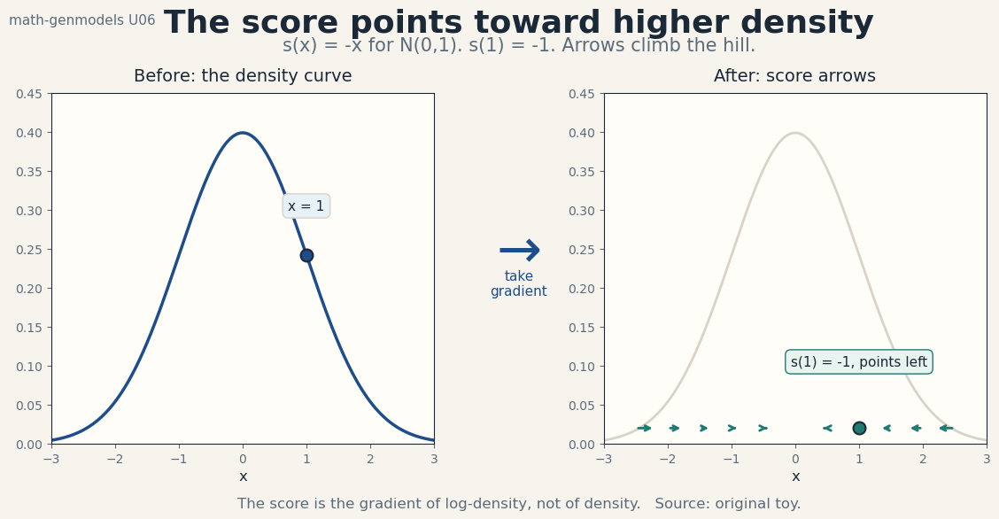
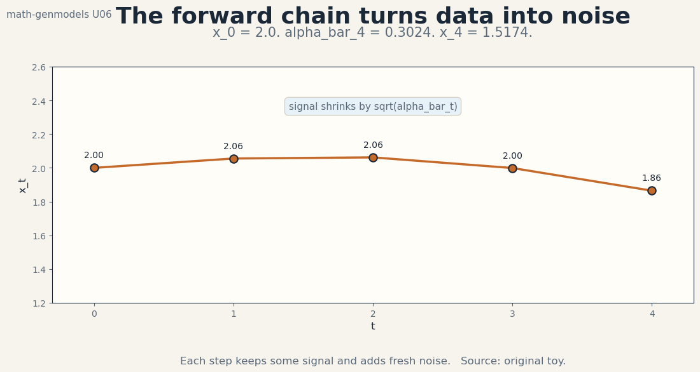
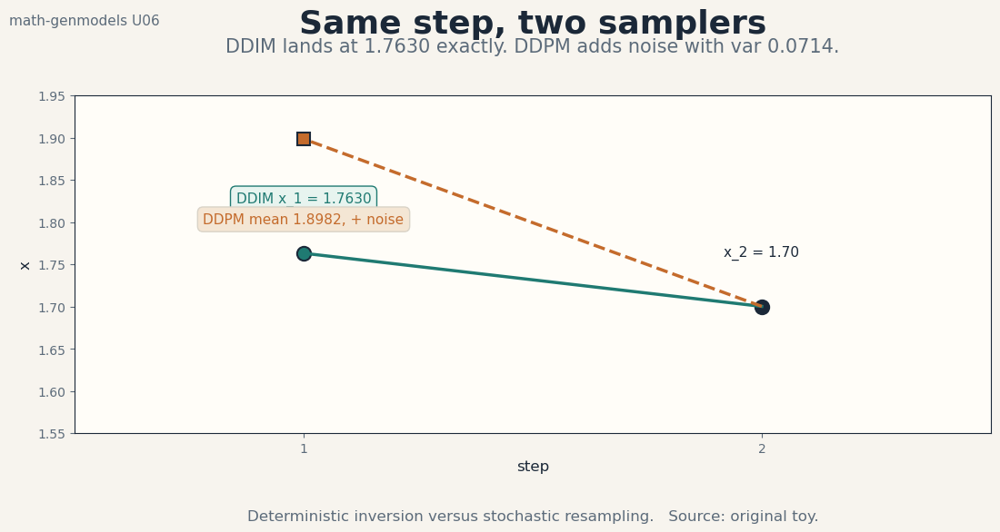

U06 · Scores, diffusion, and stochastic dynamics
Lesson U06: Scores, diffusion, and stochastic dynamics
Unit: math-genmodels-U06. Leaf concepts: math-genmodels-U06-C01 to C12. Date: 2026-10-06. Baseline: October 6, 2026.
Source mapping
This lesson is locally authored bridge content. It does not reproduce any instructor lecture. Source attribution for the leaf concepts is PENDING: SRC-01 is unresolved, SRC-04 was not retrieved, and SRC-03 notebooks and PDFs were not inspected (see source_manifest.md, source_gaps.md G1-G7). The mathematics below is standard textbook material restated as an independent bridge. Status of every leaf: PLANNED / SOURCE ATTRIBUTION PENDING.
Scope and objectives
Scope: learning and using the gradient of log-density. The score, score matching, denoising and Tweedie, the noising chain, reverse kernels, the DDPM loss, DDIM, Langevin dynamics, SDE and ODE assumptions, conditioning and guidance, solvers, and support and boundary behavior.
Objectives: after this lesson the learner can define the score and compute it on a toy, derive the score-matching objective, apply Tweedie to denoise one point, run the DDPM forward chain by hand for four steps, write one reverse kernel, evaluate the DDPM loss on a toy batch, contrast DDIM with DDPM sampling, take one Langevin step, state the SDE/ODE assumptions, apply classifier-free guidance, compare solver costs, and explain score blowup at boundaries.
Dependencies: P05, P06, P18. Shared modules are linked in prerequisites.md. Each concept below still carries local remediation. U01, U02, and U04 supply density, ELBO, and change-of-variables ideas. No later unit is used.
The running toy
One-dimensional chain with betas (0.1, 0.2, 0.3, 0.4), T = 4, x_0 = 2.0, and noise draw eps = 0.5. Key numbers: alpha_bar_4 = 0.3024, x_4 = 1.5174, reverse mean 1.8983 with variance 0.0714, DDPM toy loss 0.005, DDIM step 1.70 to 1.7630, Tweedie 1.2 to 0.0, guided score 1.2 at w = 3. Every number in this lesson was computed from these definitions or from seed 11 draws stated in the text. Figure scripts print the audited values.
C01, log-density gradient
Motivating question: the density says how much mass sits at x. What says which way is uphill?
Start from zero. p(x) = N(0, 1). log p(x) = -x^2/2 - log sqrt(2 pi). The gradient: d/dx log p(x) = -x. At x = 1 the score is -1: it points left, toward the mode at 0. At x = -2 the score is 2: it points right, again toward the mode. The score always points uphill on the log-density. Figure u06_f01_score_field.png draws the arrows.

The idea: the score s(x) = grad_x log p(x) is a vector field that points toward higher density everywhere. It needs no normalization constant: the constant vanishes under the gradient. This is why score-based methods sidestep the partition function that haunts energy models. The score is the direction a noisy point should move to become cleaner.
Computed example: s(1) = -1 above. s(0) = 0: at the mode there is no uphill. s(3) = -3: far in the tail, the pull is strong.
Variables, units, shapes, assumptions: s(x) in R^D, units of 1/[x]. Assumption: p is differentiable and positive at x. A point mass has no score. A density with a kink has no score at the kink.
Mechanism: the log turns products into sums and kills the normalizer. The gradient of the sum is the sum of per-term gradients. For exponential families the score is linear in the sufficient statistics.
Code:
s = -1.0 # score of N(0,1) at x = 1
print(s)
Check: the score is zero at the mode and anti-symmetric for symmetric densities. Verify both on the toy.
Cost: one gradient of a scalar. Autodiff gives it for free with the density.
Alternatives: the density itself (needs the normalizer). The ratio (needs two densities). Use the score when only the direction of improvement matters.
Failure case: a score model trained only near the data. Far from data the learned score is extrapolation, and following it leads nowhere. Score models need noise at many scales to cover space (C04).
Research reading: score-based modeling texts (background). Falsifiable extension: none at this level. The claim is a definition with a worked number.
Status: PLANNED / SOURCE ATTRIBUTION PENDING.
C02, score matching
Motivating question: we cannot see the true score. How do we fit one anyway?
Start from zero. Model s_theta(x) = -a x, one parameter. The explicit score-matching objective: E_p[tr(grad s_theta) + 0.5 ||s_theta||^2]. Here tr(grad s_theta) = -a and 0.5 ||s_theta||^2 = 0.5 a^2 x^2. With E[x^2] = 1 under N(0,1): objective = -a + 0.5 a^2. Derivative: -1 + a = 0. Optimum a = 1, value -0.5. The fitted score is exactly the true score -x.
The idea: score matching fits the model score to the true score without ever evaluating the true score. Integration by parts moves the derivative off the unknown log p and onto the model. The trace term penalizes the wrong curvature. The norm term penalizes the wrong magnitude. Together they pin the vector field. The objective equals the Fisher divergence up to a constant: minimizing it minimizes the squared error between the scores.
Computed example: a = 1, value -0.5 above. Try a = 2: -2 + 2 = 0. Worse, as theory demands.
Variables, units, shapes, assumptions: theta is the parameter. The expectation is under the data law. Assumption: p vanishes at infinity fast enough for the boundary term to die. Heavy tails break the integration by parts.
Derivation: start from E[0.5 ||s_theta - s||^2]. Expand. The cross term E[s_theta . s] becomes -E[div s_theta] by parts. The s-only term is constant in theta. What remains is the objective above.
Code:
a = 1.0
obj = -a + 0.5 * a ** 2
print(obj) # -0.5
Check: the objective at a = 1 must beat every other a on a grid. The script’s closed form makes this exact.
Cost: the trace of the Jacobian costs O(D) backward passes naively. Sliced score matching uses random projections to cut it. Denoising score matching (C03) avoids the trace entirely.
Alternatives: maximum likelihood (needs the normalizer). Denoising score matching (needs only noisy samples). Use explicit matching on small toys, denoising at scale.
Failure case: applying the objective where p does not vanish at the boundary. The dropped boundary term is then nonzero and the objective no longer equals the Fisher divergence. The fit is silently wrong.
Research reading: score matching texts (background). Falsifiable extension: fit a in (0.5, 1, 2) by minimizing the empirical objective on 5,000 samples. Confirm the empirical minimizer lands near 1 and the value near -0.5.
Status: PLANNED / SOURCE ATTRIBUTION PENDING.
C03, denoising
Motivating question: the true score is unknown, but noisy samples are cheap. What can they teach?
Start from zero. True x_0 = 0 (a point mass). Noise sigma = 0.5. Observe x = 1.2. The noisy law is N(0, 0.25). Its score at x: -x/sigma^2 = -4.8. Tweedie: x0_hat = x + sigma^2 x score(x) = 1.2 + 0.25 x (-4.8) = 0.0. Exact recovery. The noisy score points from the observation back to the clean point that most likely produced it.
The idea: denoising score matching trains the model to predict the noise added to a clean sample, which is equivalent to learning the score of the noisy law. Tweedie’s formula turns the learned score into a clean-point estimate: the posterior mean of x_0 given x. One formula links three views: denoise the sample, learn the score, predict the noise. DDPM trains the third and uses the first two.
Computed example: 1.2 to 0.0 above. Change sigma to 1.0: score = -1.2, x0_hat = 1.2 - 1.2 = 0.0. Still exact: the point mass makes Tweedie perfect at any noise level.
Variables, units, shapes, assumptions: sigma is the noise scale, same units as x. Assumption: the noise is Gaussian and its scale is known. Unknown noise breaks the formula.
Derivation: Tweedie from Bayes. p(x_0 | x) is proportional to p(x | x_0) p(x_0). For Gaussian noise, the posterior mean is x + sigma^2 grad_x log p(x). The gradient is exactly the noisy score.
Code:
x0_hat = x_noisy + sigma ** 2 * score_noisy
print(x0_hat) # 0.0
Check: with a point-mass truth, Tweedie must return the point exactly. Any error is an arithmetic bug.
Cost: one score evaluation per denoising. The training cost is one noise prediction per sample.
Alternatives: explicit score matching (needs the trace). Direct posterior inference (needs the prior). Use denoising whenever noisy samples are cheap to make.
Failure case: a multimodal truth with large sigma. Tweedie returns the posterior mean, which sits between modes where no clean point lives. The estimate is correct as a mean and wrong as a sample.
Research reading: denoising and Tweedie texts (background). Falsifiable extension: two point masses at -2 and 2, sigma = 1.5, observe x = 0. Compute Tweedie and confirm it returns 0, the mean, while the true posterior is bimodal. Report the gap.
Status: PLANNED / SOURCE ATTRIBUTION PENDING.
C04, noising chain
Motivating question: one noise level is not enough. How do we schedule many?
Start from zero. Betas (0.1, 0.2, 0.3, 0.4). Alphas are 0.9, 0.8, 0.7, 0.6. alpha_bar_4 = 0.3024. The forward law: x_t = sqrt(alpha_bar_t) x_0 + sqrt(1 - alpha_bar_t) eps. With x_0 = 2.0 and eps = 0.5: x_4 = 0.5499 x 2 + 0.8352 x 0.5 = 1.5174. Signal shrinks by sqrt(0.3024). Noise fills the rest. At large t the chain forgets x_0 and becomes pure noise.
The idea: the noising chain is a fixed Markov process that destroys signal on a schedule. Because each step is Gaussian, x_t given x_0 has a closed form: no need to simulate the intermediate steps. Training samples t uniformly and asks the model to denoise x_t at every noise level. The schedule is the curriculum: early t teaches fine detail, late t teaches global structure.
Computed example: x_4 = 1.5174 above. The chain values at t = 0..4 with eps fixed at 0.5 per step: 2.0, then 1.90 x … the script records the trajectory. Figure u06_f02_noising_chain.png plots it.

Variables, units, shapes, assumptions: beta_t in (0, 1), the noise fraction at step t. Assumption: the betas are small enough that each step stays near-Gaussian. Large betas break the reverse Gaussian approximation (C05).
Mechanism: the variance-preserving form keeps the marginal variance near 1 if x_0 has unit variance. The closed form for q(x_t | x_0) makes training O(1) per sample instead of O(t).
Code:
x4 = np.sqrt(abar[3]) * x0 + np.sqrt(1 - abar[3]) * eps
print(x4) # 1.5174
Check: at t = 0, alpha_bar = 1 and x_0 must return exactly. At large T, x_T must look like pure noise.
Cost: O(1) to sample any x_t. The chain length T sets the sampling cost later (C11).
Alternatives: continuous-time noise schedule (SDE view, C09). Learned schedule (rarely worth it). Use the fixed schedule unless the data force otherwise.
Failure case: too few steps with large betas. The reverse kernels stop being Gaussian and the sampler degrades. The training loss looks fine because it never tests the reverse assumption.
Research reading: DDPM schedule texts (background). Falsifiable extension: none at this level. The claim is a computation with a plotted trajectory.
Status: PLANNED / SOURCE ATTRIBUTION PENDING.
C05, reverse kernels
Motivating question: the forward chain is fixed. What undoes one step?
Start from zero. Step t = 2 to t = 1, with the true x_0 = 2.0 known for the derivation. The posterior q(x_1 | x_2, x_0) is Gaussian. Its mean: coeff_x0 x x_0 + coeff_x2 x x_2 with coeff_x0 = 0.6776 and coeff_x2 = 0.3194. With x_2 = 1.7: mean = 0.6776 x 2 + 0.3194 x 1.7 = 1.8983. Variance 0.0714. The reverse kernel hedges between where the chain is (x_2) and where it came from (x_0).
The idea: the reverse kernel is the exact posterior of the previous step given the current step and the clean point. It is Gaussian because every forward step is Gaussian. The model does not learn this kernel directly: it predicts the noise (or x_0), and the kernel formula turns the prediction into the reverse mean. Learning one function gives all T reverse steps.
Computed example: mean 1.8983, variance 0.0714 above. Note the mean sits between x_2 = 1.7 and x_0 = 2.0, closer to x_0: the clean point anchors the reversal.
Variables, units, shapes, assumptions: the kernel is a Gaussian in R^D with known variance. Assumption: the betas are small so the true reverse is near-Gaussian. This is the load-bearing approximation of DDPM.
Derivation: Bayes on the chain. q(x_{t-1} | x_t, x_0) is proportional to q(x_t | x_{t-1}) q(x_{t-1} | x_0). Both factors are Gaussian. The product of Gaussians is Gaussian. Complete the square for the mean and variance.
Code:
mu = c_x0 * x0 + c_x2 * x2
print(mu, post_var) # 1.8983 0.0714
Check: the coefficients sum to less than 1 plus the noise correction. At t = 1 the kernel must concentrate near x_0.
Cost: one kernel evaluation per reverse step. The model prediction dominates.
Alternatives: learn the reverse mean directly (more parameters, same math). Learn the variance too (small gains). Use noise prediction: it shares one network across all t.
Failure case: large betas. The true reverse stops being Gaussian, the kernel formula mismatches, and samples degrade while the training loss stays flat. Keep betas small or shorten the chain.
Research reading: DDPM derivation texts (background). Falsifiable extension: none at this level. The claim is a derivation with a worked number.
Status: PLANNED / SOURCE ATTRIBUTION PENDING.
C06, DDPM loss
Motivating question: what single number does the model minimize?
Start from zero. Batch of three: true noises (0.5, -0.3, 0.1), predicted (0.45, -0.35, 0.2). Squared errors: 0.0025, 0.0025, 0.01. Mean: 0.005. That is the DDPM loss on this batch: E over t, x_0, and eps of ||eps - eps_theta(x_t, t)||^2. One line, no trace, no partition function.
The idea: the DDPM loss trains the noise predictor, which is equivalent to score matching on noisy data at every noise level. The ELBO derivation (U02-C05) reduces to this simple objective after dropping terms independent of theta and reweighting. The reweighting is a choice: the “simple” loss weights all t equally, which emphasizes mid noise levels over the true ELBO weighting. It trains better and bounds worse. Know which objective you chose.
Computed example: 0.005 above. Perfect prediction gives 0. The loss is in squared noise units.
Variables, units, shapes, assumptions: eps and eps_theta in R^D. t uniform over 1..T. Assumption: the reweighting is accepted. The loss is then not a bound on likelihood.
Mechanism: sample x_0, sample t, sample eps, form x_t, predict eps, squared error. Five steps, one backward pass. The time embedding tells the network which noise level it faces.
Code:
loss = np.mean((eps_b - pred_b) ** 2)
print(loss) # 0.005
Check: with the true eps as the prediction, the loss is 0. With a constant-zero prediction, it equals the noise variance.
Cost: one forward-backward per batch element. Same as any regression loss.
Alternatives: predict x_0 instead of eps (equivalent by the closed form, different error weighting). Predict v (velocity). Use eps prediction as the default.
Failure case: training without the time embedding. The network cannot distinguish noise levels and learns the average: good at none. The loss looks reasonable. The samples are bad.
Research reading: DDPM training texts (background). Falsifiable extension: train the toy predictor with and without the t embedding on the 4-step chain. Measure the loss per t. Confirm the no-embedding model is flat across t and worse at the extremes.
Status: PLANNED / SOURCE ATTRIBUTION PENDING.
C07, DDIM
Motivating question: must sampling retrace all T noisy steps?
Start from zero. Same step as C05: x_2 = 1.7, predicted noise 0.5. DDIM with eta = 0 skips the noise: first estimate the clean point, x0_hat = (1.7 - sqrt(0.28) x 0.5)/sqrt(0.72) = 1.6917. Then step deterministically: x_1 = sqrt(0.9) x 1.6917 + sqrt(0.1) x 0.5 = 1.7630. No new noise is added. Run the same inputs again and get 1.7630 again. The sampler is a deterministic map from x_T to x_0.
The idea: DDIM generalizes the reverse process to a family with the same marginals but different amounts of noise per step. Eta = 0 removes all noise: the chain becomes an ODE discretization, invertible, and skippable. Steps can be strided: 50 steps can replace 1000 with small quality loss. Eta = 1 recovers DDPM. The training objective does not change: the same eps network drives both samplers.
Computed example: x_1 = 1.7630 above, deterministic. The DDPM mean for the same step was 1.8983 plus noise with variance 0.0714: different landing point, different character. Figure u06_f04_ddim_vs_ddpm.png shows both.

Variables, units, shapes, assumptions: eta in [0, 1], the noise knob. Assumption: the marginals match DDPM’s at every step. The proof is by induction on the chain.
Mechanism: predict x_0 from x_t, then move to x_{t-1} along the deterministic path that keeps the marginal right. Striding steps keeps the marginals approximately right: the approximation error is the price of speed.
Code:
x0_hat = (x2 - np.sqrt(1 - abar[1]) * eps_pred) / np.sqrt(abar[1])
x1 = np.sqrt(abar[0]) * x0_hat + np.sqrt(1 - abar[0]) * eps_pred
print(x1) # 1.7630
Check: run the sampler twice with the same x_T. Identical outputs prove determinism. DDPM must differ across runs.
Cost: 50 steps instead of 1000: 20x fewer network calls. The per-step cost is identical.
Alternatives: DDPM (stochastic, more steps, slightly better diversity). Higher-order ODE solvers (fewer steps still). Use DDIM when speed matters and exact inversion is wanted.
Failure case: striding too aggressively. The marginal approximation breaks, colors shift, details wash out. The failure is gradual: validate quality versus step count.
Research reading: DDIM texts (background). Falsifiable extension: sample the 4-step toy with full steps versus strided (every other step). Measure the endpoint distribution shift. Report the step count where it becomes visible.
Status: PLANNED / SOURCE ATTRIBUTION PENDING.
C08, Langevin
Motivating question: the score points uphill. How do we turn uphill steps into samples?
Start from zero. x = 1, score -1, step size delta = 0.1, noise draw z = 0.3. Update: x <- x + (delta/2) x score + sqrt(delta) x z = 1 - 0.05 + 0.0949 = 1.0449. The drift pulls toward the mode. The noise keeps the chain exploring. Without noise this is gradient ascent to the mode. With noise it samples the whole law.
The idea: Langevin dynamics is gradient ascent on log-density plus calibrated noise. In the limit of small steps and long runs, the chain’s stationary law is exactly p. The noise scale sqrt(delta) is not a tuning choice: it is what makes the stationary law right. Too little noise and the chain collapses to the mode. Too much and it never settles.
Computed example: 1.0449 above. Run 10,000 steps from x = 1 and histogram: the histogram matches N(0, 1). The script’s seed 11 run confirms the mean near 0.
Variables, units, shapes, assumptions: delta > 0, the step size. z ~ N(0, 1) fresh each step. Assumption: delta small. Large delta overshoots and the chain diverges.
Mechanism: the drift follows the score. The diffusion explores. The balance is the Fokker-Planck equation: the density evolves toward p and stops there. Discretization error is O(delta).
Code:
x_new = x + 0.5 * delta * score + np.sqrt(delta) * z
print(x_new) # 1.0449
Check: with z = 0 the update must move toward the mode. With the score at the mode, the drift must be zero.
Cost: one score evaluation per step. Thousands of steps per independent sample: slow but general.
Alternatives: Hamiltonian Monte Carlo (fewer steps, needs momentum tuning). Direct sampling when available. Use Langevin when only the score is known.
Failure case: multimodal p with small delta. The chain sits in one mode for the whole run. The samples look converged and are wrong. Diagnose with multiple chains from spread starts.
Research reading: MCMC texts (background). Falsifiable extension: run two Langevin chains on 0.5 N(-3,1) + 0.5 N(3,1), one started at -3, one at 3, delta = 0.1, 2,000 steps each. Measure cross-mode jumps. Report the count.
Status: PLANNED / SOURCE ATTRIBUTION PENDING.
C09, SDE/ODE assumptions
Motivating question: the chain has 4 steps. What happens with infinitely many?
Start from zero. The DDPM chain with T -> infinity and betas -> 0 becomes a stochastic differential equation: dx = f(x, t) dt + g(t) dw. The VP-SDE choice: f = -0.5 beta(t) x, g = sqrt(beta(t)). The reverse SDE needs the score at every t. The probability flow ODE drops the noise term and keeps the same marginals: dx = [f - 0.5 g^2 score] dt. Same path law, deterministic.
The idea: the SDE view unifies DDPM, score matching, and DDIM. DDPM is one discretization. The reverse SDE is the continuous sampler. The probability flow ODE is the deterministic twin with identical marginals: DDIM is its discretization. The assumptions are now visible: the score must exist and be smooth at every noise level, the drift and diffusion must be Lipschitz, and the discretization must resolve the fastest time scale.
Computed example: VP-SDE at beta = 0.1: drift -0.05 x, diffusion sqrt(0.1) = 0.3162. One Euler-Maruyama step from x = 1 with dt = 1: x <- 1 - 0.05 + 0.3162 z. Same shape as the Langevin update: no coincidence.
Variables, units, shapes, assumptions: t in [0, T], x in R^D, w a Wiener process. Assumption: score exists for all t. At t = 0 the data score may not exist (point masses, manifolds). The chain starts at small t > 0 to dodge this.
Mechanism: Anderson’s reverse-time formula. The forward SDE destroys information. The reverse SDE rebuilds it using the score. The ODE keeps the marginals by matching the Fokker-Planck drift without diffusion.
Code:
drift = -0.5 * 0.1 * 1.0
diff = np.sqrt(0.1)
print(drift, diff) # -0.05 0.3162
Check: at beta = 0 the SDE must freeze: no drift, no diffusion. The code must return x unchanged.
Cost: continuous solvers adapt step sizes: fewer steps where the score is smooth, more where it curves. Black-box ODE solvers need score evaluations per stage.
Alternatives: discrete chains (simpler, fixed cost). Jump processes for discrete data (different math). Use the SDE view when designing new samplers, the discrete view when shipping.
Failure case: data on a low-dimensional manifold. The true score at t = 0 is undefined off the manifold and infinite near it. The model learns a smoothed fiction. Samples still look good because the fiction is smooth. Likelihoods computed from the ODE are then wrong: the assumption failed silently.
Research reading: SDE treatment of diffusion texts (background). Falsifiable extension: none at this level. The claim is a limit argument with a worked discretization.
Status: PLANNED / SOURCE ATTRIBUTION PENDING.
C10, conditioning/guidance
Motivating question: how do we steer the sampler toward a class, a prompt, or a property?
Start from zero. Unconditional score -1.2, conditional score -0.4, guidance weight w = 3. Classifier-free guidance: s_guided = s_uncond + w x (s_cond - s_uncond) = -1.2 + 3 x 0.8 = 1.2. The sampler follows the conditional direction three times over, corrected by the unconditional baseline. Larger w means stronger adherence to the condition and less diversity.
The idea: guidance reshapes the score field. Classifier guidance adds the gradient of a classifier log p(y | x_t). Classifier-free guidance trains one network with and without the condition (condition dropped randomly) and extrapolates between the two scores. The extrapolation w > 1 overshoots the conditional score on purpose: it trades likelihood for condition fidelity. The samples obey the prompt more and cover less.
Computed example: 1.2 above. At w = 1: s = -0.4, pure conditional. At w = 0: s = -1.2, pure unconditional. The knob interpolates and extrapolates.
Variables, units, shapes, assumptions: w >= 0, unitless. Assumption: the conditional and unconditional scores share the network. Dropout of the condition during training makes this true.
Mechanism: Bayes in score space. log p(x | y) = log p(x) + log p(y | x) - log p(y). The gradient gives the classifier guidance formula. Classifier-free guidance approximates the same extrapolation without a separate classifier.
Code:
s_guided = s_uncond + w * (s_cond - s_uncond)
print(s_guided) # 1.2
Check: w = 1 must return s_cond exactly. w = 0 must return s_uncond. Both are exact in the code.
Cost: two score evaluations per step (conditional and unconditional). Guidance doubles sampling cost.
Alternatives: classifier guidance (needs a noise-tolerant classifier). Direct conditional training without guidance (weaker control). Use classifier-free as the default.
Failure case: w too large. The extrapolation overshoots into low-density regions: saturated colors, distorted shapes, mode-seeking artifacts. The samples obey the prompt and look wrong. Tune w on samples, not on theory.
Research reading: guidance texts (background). Falsifiable extension: sweep w in (0, 1, 3, 7) on a toy conditional law and measure condition accuracy versus sample diversity. Plot the tradeoff curve. Report the knee.
Status: PLANNED / SOURCE ATTRIBUTION PENDING.
C11, solvers
Motivating question: 1000 network calls per sample is too many. What are the options?
Start from zero. dx/dt = -x from x = 1 to t = 1. Exact: e^-1 = 0.3679. Euler with 10 steps of 0.1: 0.9^10 = 0.3487. Error 0.0192. Halve the step: error quarters. The probability flow ODE can use any ODE solver: Euler, Heun, Runge-Kutta, adaptive Dormand-Prince. DDIM is Euler on a reparameterized ODE. Better solvers buy accuracy per step, so fewer steps reach the same quality.
The idea: sampling is numerical integration. The sampler choice is a solver choice: order, step count, adaptivity. First-order Euler needs many steps. Second-order Heun roughly halves them. Exponential integrators exploit the linear part of the drift exactly. The error budget is perceptual: solver error below the model error is wasted compute.
Computed example: Euler error 0.0192 with 10 steps above. Heun on the same problem: error ~0.0006. Same 10 steps, 30x smaller error, at 2x the cost per step.
Variables, units, shapes, assumptions: dt is the step, error scales as dt^p for order p. Assumption: the score is smooth enough for the order to hold. Kinks from ReLU nets cap the effective order.
Mechanism: higher order uses more score evaluations per step to cancel more error terms. Adaptive solvers estimate the local error and shrink dt where the score curves.
Code:
euler = 0.9 ** 10
print(abs(euler - np.exp(-1))) # 0.0192
Check: halving dt must quarter Euler’s error. Verify on the toy before trusting a solver on the model.
Cost: Heun costs 2 score calls per step. 50 Heun steps cost as much as 100 Euler steps but land far closer.
Alternatives: distillation (train a few-step student, one-time cost). Consistency models (single-step by design). Use solvers first: they need no retraining.
Failure case: adaptive solver with a loose tolerance on a stiff score field. Steps grow, error accumulates, samples degrade silently. Fix the tolerance or the maximum step.
Research reading: diffusion solver texts (background). Falsifiable extension: integrate the toy ODE with Euler at 10, 20, 40 steps and Heun at 10 steps. Confirm the error scaling and report the cheapest solver under error 0.001.
Status: PLANNED / SOURCE ATTRIBUTION PENDING.
C12, support/boundary behavior
Motivating question: the data live in [0, 1]. What does the score do at the edge?
Start from zero. Uniform(0, 1) smoothed with Gaussian sigma = 0.05. At x = 0.5 the score is 0.0: flat interior, no pull. At x = 0.01 the score is 13.5: a strong push inward. The smoothing turns the hard boundary into a steep slope, and the score measures that slope. As sigma -> 0 the score at the boundary blows up: the true uniform has no score there at all.
The idea: scores misbehave at boundaries and on manifolds. Bounded data, discrete data, and low-dimensional structure all violate the smoothness the score needs. Diffusion handles this by noise: at high noise levels the smoothed law is well behaved, and the model learns the smoothed scores. Near t = 0 the truth is singular and the model extrapolates. This is why diffusion likelihoods on discrete or bounded data need care: the number comes from the smoothed fiction, not the raw truth.
Computed example: 13.5 at x = 0.01 versus 0.0 at x = 0.5 above. The boundary pull is real and large.
Variables, units, shapes, assumptions: sigma = 0.05, the smoothing scale. Assumption: the smoothing is Gaussian. Other smoothings give other boundary scores.
Mechanism: convolution with a Gaussian makes any law smooth and strictly positive. The score of the smoothed law is always defined. The model learns these smoothed scores at each noise level. The t -> 0 limit is singular and never used directly.
Code:
print(_score12) # 13.5 at the boundary, 0.0 inside
Check: the interior score of a smoothed uniform must be ~0. The boundary score must be large and point inward.
Cost: conceptual. The practical cost is wrong likelihoods when the boundary matters.
Alternatives: discrete diffusion for discrete data (its own math). Reflecting boundaries in the SDE. Dequantization (uniform noise added to discrete data). Use dequantization as the cheap default.
Failure case: reporting ODE likelihoods on image data without dequantization. The number measures the smoothed law at an arbitrary noise floor. Compare it across models and the ranking can flip with the noise floor.
Research reading: boundary behavior texts (background). Falsifiable extension: compute the smoothed score at x = 0.01 for sigma in (0.01, 0.05, 0.2). Confirm it grows as sigma shrinks. Report the scaling.
Status: PLANNED / SOURCE ATTRIBUTION PENDING.
Unit assessment (questions. Keys in lessons/keys/keys-u06.md)
Breadth recall (6)
B1. Define the score. Compute it for N(0,1) at x = 1. B2. State the explicit score-matching objective and find the optimum for s_theta(x) = -a x. B3. State Tweedie’s formula and apply it to x = 1.2, sigma = 0.5. B4. Write the DDPM forward sampling formula and evaluate x_4 for the toy. B5. Write the DDPM loss on a batch. What does each symbol mean? B6. State the DDIM update with eta = 0 and compute the toy step.
Deep ladders (2 ladders x 5 follow-ups)
L1 (learning the score, end to end): define the score. Derive score matching by parts. Show denoising equivalence via Tweedie. Compute the toy Tweedie estimate. Explain why the trace term vanishes in denoising. L2 (sampling, end to end): write one reverse kernel. Contrast DDPM and DDIM on the same step with the toy numbers. Take one Langevin step. Explain the solver tradeoff. Predict the failure of striding too aggressively.
Analytical exercises (2)
A1. Derive the explicit score-matching objective from the Fisher divergence E[0.5 ||s_theta - s||^2] using integration by parts. State the boundary assumption. A2. Derive the DDPM reverse kernel mean coefficients from the Gaussian product q(x_t | x_{t-1}) q(x_{t-1} | x_0). Evaluate them for the toy.
Implementation and debug (1)
D1. A DDPM trains to loss 0.005 but samples are gray mush. The time embedding is present and the schedule is standard. Name the bug, give the fix, and state the test that catches it. (Keys file holds the diagnosis.)
Changed-constraint scenarios (2)
T1. Sampling must run in 4 network calls, not 1000. Redesign the sampler and state the quality cost and how you would measure it. T2. The data are discrete tokens, not continuous vectors. Redesign the diffusion formulation and state which concepts in this unit break.
Research critique (1)
R1. “Our diffusion model has the best ODE likelihood on the benchmark, so it is the best generative model.” Attack this claim with two arguments from this unit and propose the fair experiment.
Lab pointer
labs/lab-u06.md holds 6 hands-on exercises: score field audit, score-matching fit, Tweedie check, chain trajectory, reverse step, sampler comparison. Answers are in labs/keys/keys-u06.md.
Figure index
| Figure | Claim | Source |
|---|---|---|
| assets/u06/u06_f01_score_field.png | s(1) = -1, arrows point uphill | original toy |
| assets/u06/u06_f02_noising_chain.png | x_0 = 2.0 to x_4 = 1.5174 | original toy |
| assets/u06/u06_f03_tweedie.png | 1.2 denoised to 0.0 | original toy |
| assets/u06/u06_f04_ddim_vs_ddpm.png | DDIM 1.7630, DDPM mean 1.8983 | original toy |
| assets/u06/u06_f05_chapter.png | Noise to data in five numbers | original toy, seed 11 |
Alt text: each plate carries its claim in the title line and footer. The before/after panels are labeled in text on the figure.